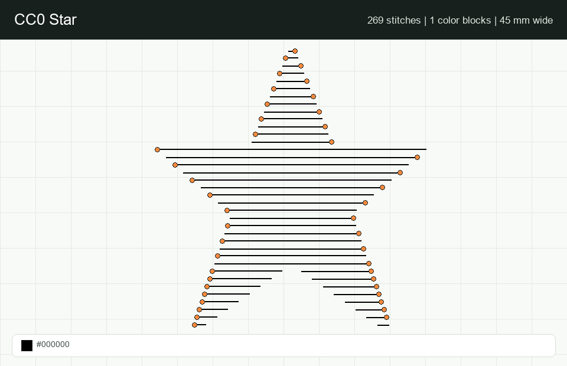
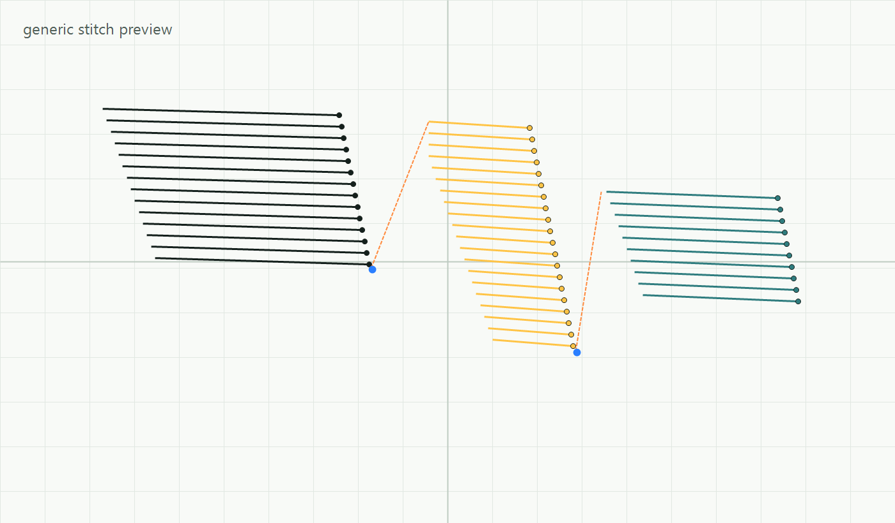
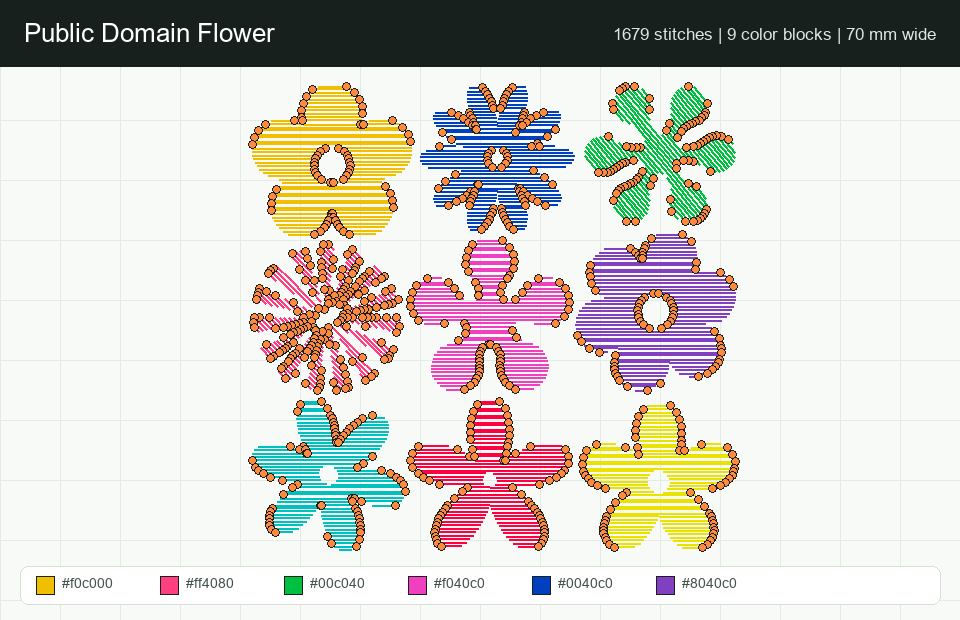
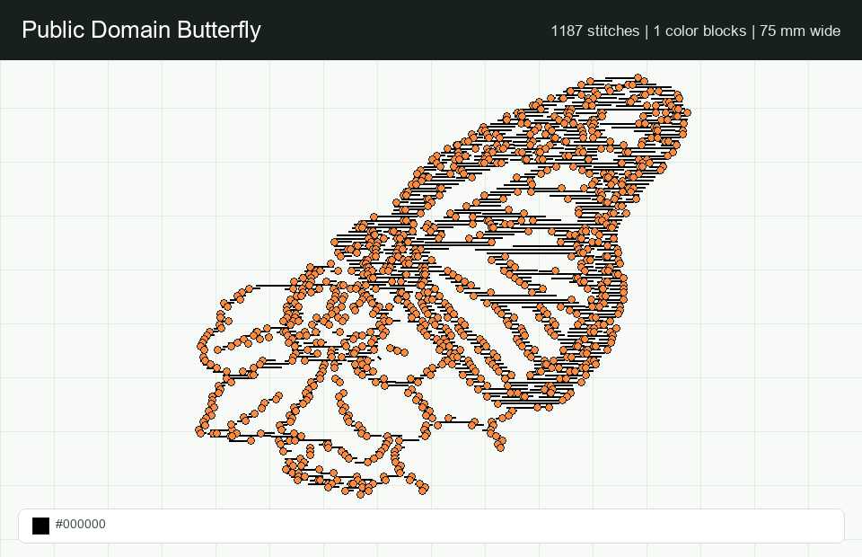

CC0 Star
A simple geometric shape for checking scale, fill spacing, and outline behavior.
View source SVGDesktop embroidery utility
Convert artwork into Brother-compatible embroidery files, inspect the stitch path, tune thread colors, and catch risky designs before they reach the machine.

Public-domain examples

A simple geometric shape for checking scale, fill spacing, and outline behavior.
View source SVG
A multi-color example for testing color blocks, ordering, and thread planning.
View source SVG
Example SVGs come from Openclipart public-domain/CC0 entries: star-15, Retro Flower, and Butterfly.
Core tools
Import SVG, JPG, PNG, PDF, or PES files and generate Brother PES output with adjustable size, stitch length, fill spacing, fill mode, and color flattening.
Step through the toolpath with zoom, pan, measurements, jumps, trims, color-change markers, optional needle points, and estimated stitch time.
Compare design colors with Floriani or Madeira thread colors, track your own thread inventory, estimate usage, and generate a shopping list.
Deselect or merge color blocks, apply changes, draw or delete stitches, save projects, bundle project files, and export a fresh PES.
Typical workflow
Open a design and choose the physical stitch size.
Adjust fill spacing, max stitch length, fill type, and color flattening.
Preview stitches, jumps, trims, density, and estimated thread usage.
Apply color edits, save the project, and export the PES file locally.
Run locally
The converter writes files, reads local artwork, and uses Python libraries. GitHub Pages cannot do those backend jobs, so the public site stays lightweight while the real work happens on your computer.
pip install -r requirements.txt
python app_launcher.pypython app.py
# open http://127.0.0.1:8765/powershell -ExecutionPolicy Bypass -File .\build_exe.ps1Build output stays local. Do not commit the EXE to GitHub.
GitHub Pages
This page is the public front door for OpenStitch: feature overview, screenshots, setup instructions, and a link to the source code. It is not a hosted converter.
{kind=link}
{kind=link}
{kind=link}